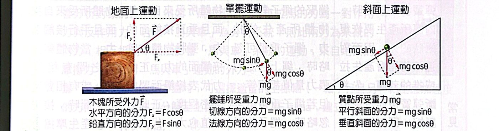
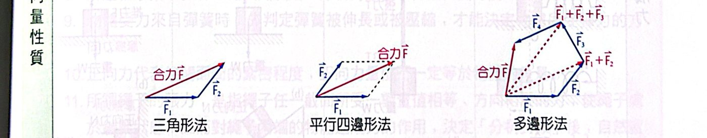
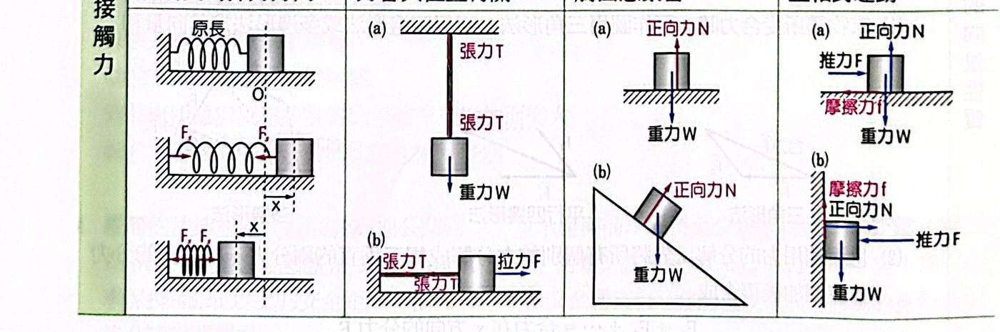
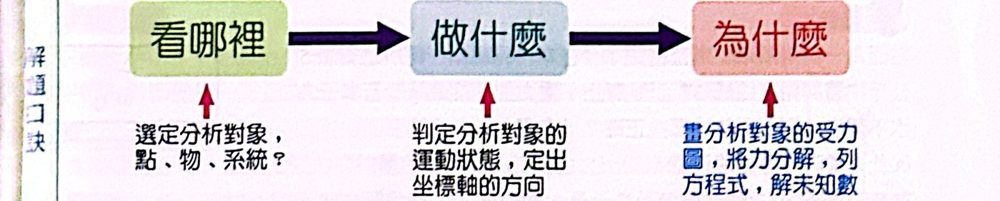
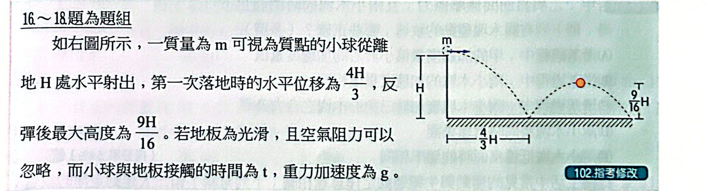
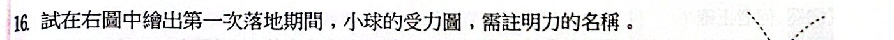
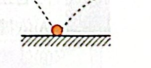
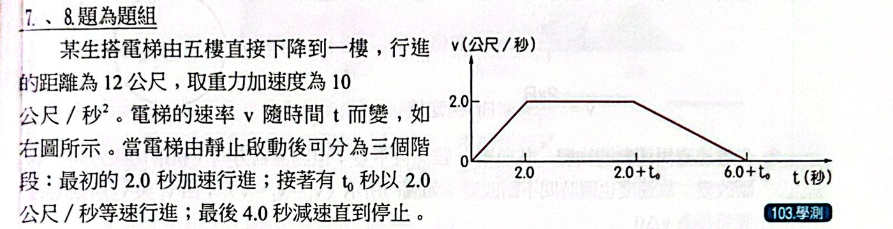
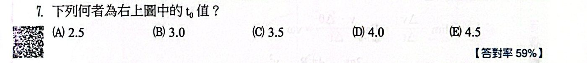

重點整理
力學的所有問題，最後都回到一句話：力改變物體的運動。牛頓用三條定律把這件事講清楚——第一定律說「不受力會怎樣」，第二定律說「受力會怎樣、改變多少」，第三定律說「力一定成對出現」。這個焦點先把三定律和常見的力（彈力、張力、正向力、摩擦力）整理好，再練習最核心的技能：選對分析對象、畫受力圖、列方程式。
一、牛頓三大運動定律
第一定律（慣性定律）：物體所受合力為 0 時，會保持原來的運動狀態——靜者恆靜，動者恆作等速直線運動。物體「想維持原狀」的特性叫慣性，質量就是慣性大小的量度。
第二定律（運動定律）：物體受力時，產生的加速度與合力同方向，量值與合力成正比、與質量成反比：
ΣF ＝ ma運動定律為什麼？
它在說什麼
力不是用來「維持運動」，而是用來「改變運動」。合力決定的是加速度（速度改變得多快），不是速度本身。
為什麼是 a ∝ F、a ∝ 1/m
- 同一個物體，推得愈用力，速度改變得愈快 ⇒ a ∝ F
- 同樣的力，推大卡車比推購物車難加速 ⇒ a ∝ 1/m
- 合起來 a ∝ F/m，選好單位讓比例常數 ＝ 1，就是 F ＝ ma。
單位：牛頓的定義
1 N 就是「讓 1 kg 的物體產生 1 m/s² 加速度的力」：1 N ＝ 1 kg·m/s²。所以用 F ＝ ma 時，力一定要用牛頓、質量用 kg。
常見錯誤
- 加速度方向 ＝ 合力方向，但速度方向不一定（例如上拋球往上飛時，合力向下）。
- F 是合力（所有外力的向量和），不是其中某一個力。
- 第一定律其實是 ΣF ＝ 0 ⇒ a ＝ 0 的特例，但它先定義了「慣性座標系」——牛頓定律只在靜止或等速運動的觀察者看來才成立。
第三定律（作用與反作用定律）：兩物體互相施力時，A 對 B 的力與 B 對 A 的力量值相等、方向相反、在同一直線上，同時產生同時消失。
F12 ＝ −F21作用力與反作用力為什麼？
判斷方法
作用力與反作用力一定是「A 對 B」和「B 對 A」——施力者和受力者對調。寫出「誰對誰」就不會錯。
最常考的陷阱：跟「平衡力」分清楚
桌上的書：
- 地球對書的重力 ↔ 書對地球的引力：作用與反作用
- 桌子對書的正向力 ↔ 書對桌子的壓力：作用與反作用
- 重力和正向力都作用在書上，大小相等方向相反，是一對平衡力，不是作用與反作用。
為什麼互相抵消的力還能讓東西動？
作用力與反作用力作用在不同物體上，所以不能相加抵消。馬拉車、車拉馬大小相等，但車子會動是因為「車受的所有力」不平衡；把馬和車看成一個系統時，這兩個力變成內力，對系統的運動沒有影響，推動系統的是地面給的摩擦力。
二、力的分解與合成
分析力學問題時，常把力分解成互相垂直的兩個分力，分別處理。最常見的三種情況：

地面上斜拉、單擺、斜面上的力分解
斜面上：沿斜面 mg sinθ、垂直斜面 mg cosθ斜面分解為什麼？
推導
斜面傾角 θ，重力 mg 鉛直向下。
- 垂直斜面的方向和鉛直線夾角也是 θ（兩組互相垂直的線，夾角相等）
- 所以：垂直斜面分量 ＝ mg cosθ，平行斜面分量 ＝ mg sinθ
怎麼記、怎麼檢查
用極端情況檢查：θ ＝ 0（平地）時，沿斜面分量應為 0 ⇒ sin0 ＝ 0 ✓；θ ＝ 90°（垂直牆）時，全部沿斜面 ⇒ sin90° ＝ 1 ✓。
應用
光滑斜面上物體下滑的加速度 ＝ g sinθ，和質量無關。
求合力時，可以作圖（三角形法、平行四邊形法、多邊形法），也可以先把每個力分解到 x、y 兩軸，各軸分量分別相加，最後再合成：
Fx ＝ ΣFix、Fy ＝ ΣFiy，合力 F ＝ √(Fx² ＋ Fy²)

三角形法、平行四邊形法、多邊形法
三、彈簧與虎克定律
彈簧被拉長或壓縮時，會產生想恢復原狀的彈力。在比例限度內，彈力與形變量成正比——這就是虎克定律，也是彈簧秤能「量力」的原理。
F ＝ kx；k ∝ A/ℓ0虎克定律為什麼？
它在說什麼
拉長（或壓縮）x，彈簧就用 kx 的力拉回（或推回）。k 是力常數，代表彈簧有多「硬」。
為什麼 k 跟原長成反比？
一條彈簧可以想成很多小段接起來。用同樣的力拉，每一小段都伸長一樣多；原長愈長，小段愈多，總伸長量愈大 ⇒ 愈容易拉長 ⇒ k 愈小。剪成一半，k 變 2 倍。
為什麼跟截面積成正比？
截面積加倍，相當於兩條並排一起出力，同樣伸長量拉力加倍 ⇒ k 加倍。
使用重點
彈簧（或輕繩）兩端受力相同；彈簧秤讀數 ＝ 一端所受的力，不是兩端的和。兩端各掛 10 kg 的物體，讀數是 10 kgw，不是 20。
串聯 1/k ＝ 1/k1 ＋ 1/k2；並聯 k ＝ k1 ＋ k2彈簧組合為什麼？
串聯推導
串聯時每條彈簧受力相同（都等於 F），伸長量相加：
x ＝ F/k1 ＋ F/k2 ⇒ F/k ＝ F/k1 ＋ F/k2 ⇒ 1/k ＝ 1/k1 ＋ 1/k2
並聯推導
並聯時每條彈簧伸長量相同（都是 x），力相加：
F ＝ k1x ＋ k2x ⇒ k ＝ k1 ＋ k2
直覺
串聯 ＝ 彈簧變長 ⇒ 變軟；並聯 ＝ 彈簧變粗 ⇒ 變硬。跟上面「k ∝ A/ℓ0」是同一件事。（注意：和電阻串並聯的公式剛好相反。）
四、質量與重量
質量是物體所含物質的多寡，代表慣性大小，不隨地點改變；重量是物體受的重力，會隨地點（g）改變。
1 kgw ＝ 9.8 N公斤重與牛頓為什麼？
推導
質量 1 kg 的物體在地表只受重力時，加速度是 g ＝ 9.8 m/s²，由 F ＝ ma：W ＝ 1 × 9.8 ＝ 9.8 N。
「1 公斤重」就定義為這個力，所以 1 kgw ＝ 9.8 N。
常見錯誤
題目的力若給 kgw（公斤重），代入 F ＝ ma 前要先換成 N。例如 10 kgw ＝ 98 N。
五、常見的接觸力
| 彈力 Fs |
張力 T |
正向力 N |
摩擦力 f |
| 彈簧形變時想恢復原狀的力，先判斷被拉長還是壓縮，才知道方向 |
繃緊的繩子對連接物體的拉力；輕繩上各處張力相等 |
接觸面給物體、垂直接觸面的推力，代表接觸得多緊 |
接觸面給物體、平行接觸面的力，阻止相對運動或相對運動的趨勢 |

四種接觸力的方向示意
六、解題口訣：看哪裡 → 做什麼 → 為什麼

解題三步驟
- 看哪裡：選定分析對象——一個點、一個物體，或一個系統。好幾個物體加速度相同時，優先把它們當成一個系統，內力（彼此之間的力）就不用管。
- 做什麼：判斷它的運動狀態（靜止、等速、加速），定出座標軸——一軸平行加速度、一軸垂直加速度。
- 為什麼：畫受力圖、把力分解到座標軸上、列方程式：平行加速度方向 ΣF ＝ ma，垂直方向 ΣF ＝ 0。
下面把最常見的幾種模型整理成公式：
連體物體：a ＝ (推動的外力) ÷ (總質量)系統法為什麼？
推導
好幾個物體用繩子連在一起（或互相推擠），加速度一樣。把它們當成一個系統：
- 彼此間的張力、推力是內力，成對出現、互相抵消
- 系統的合外力 ＝ (總質量) × a ⇒ a ＝ ΣF外 / Σm
先用系統求 a，再拆開分析其中一個物體，才能求中間的張力或推力。
例子
- 光滑桌面上 3m、2m 兩木塊，推力 F 推 3m：a ＝ F/5m；後面的 2m 只靠前面推，推力 ＝ 2m·a ＝ 2F/5
- 定滑輪兩邊掛 M、m（亞特伍機）：a ＝ (M − m)g/(M ＋ m)，張力 T ＝ 2Mmg/(M ＋ m)
直覺
要被推動的東西愈多（總質量大），加速度愈小；中間的繩子只需要拉「後面那一串」，所以張力比外力小。
加速車廂中的單擺：tanθ ＝ a/g懸掛物偏角為什麼？
推導
車以加速度 a 前進，吊著的球跟車一起加速，受重力 mg、繩張力 T：
- 鉛直：T cosθ ＝ mg
- 水平：T sinθ ＝ ma
相除 ⇒ tanθ ＝ a/g，張力 T ＝ m√(g² ＋ a²)
邏輯
球往加速度的反方向偏（慣性：車往前衝，球「被留在後面」）。所以看繩子往哪邊偏，就知道加速度指向另一邊；但不能知道車往哪個方向開（可能往前加速，也可能往後減速）。
同一個數學
光滑斜面上的木塊要相對斜面靜止：斜面要以 a ＝ g tanθ 水平加速——一樣是兩個力（重力＋另一個斜的力）合成水平加速度。
電梯中的視重：N ＝ m(g ＋ a)（a 向上為正）超重與失重為什麼？
推導
人站在秤上，受重力 mg（向下）和秤的正向力 N（向上）。取向上為正：
N − mg ＝ ma ⇒ N ＝ m(g ＋ a)
秤的讀數就是 N（秤推人的力 ＝ 人壓秤的力，作用與反作用），稱為視重。
判斷口訣：只看加速度方向，不看速度方向
- 加速度向上（上升加速、下降減速）⇒ 視重 ＞ mg（超重）
- 加速度向下（上升減速、下降加速）⇒ 視重 ＜ mg（失重）
- 等速或靜止 ⇒ 視重 ＝ mg
- 自由落下（a ＝ g 向下）⇒ 視重 ＝ 0（完全失重）
反過來用
由讀數求加速度：a ＝ (讀數 − 真重)/m × g（讀數用 kgw 時直接用比例）。例如 60 kg 的人讀到 72 kg ⇒ a ＝ (12/60)g ＝ 2 m/s² 向上。
七、Summary 重點
- 牛頓運動定律成立的前提：觀察者靜止或作等速運動（慣性座標）。
- 質量代表慣性大小；慣性愈大，運動狀態愈難改變。
- 某時刻物體只有一個加速度，由合力造成，方向與合力相同。
- 用 ΣF ＝ ma 時，力一定用 SI 單位（N）。
- 解題第一步永遠是決定分析對象；加速度相同的數個物體優先當成一個系統。
- 內力不影響系統運動：馬拉車與車拉馬是內力，推動「馬＋車」的是地面摩擦力。
- 座標軸取「平行加速度」與「垂直加速度」兩方向，再分別列式。
- 正向力代表接觸的緊密程度，不一定等於重量。
- 討論作用力與反作用力時，先找出「施力者」與「受力者」。
範例與類題
看答案與詳解收起
答(A)(D)
解繩子偏向右側（球往右後方擺）⇒ 加速度向左，tanθ ＝ a/g ⇒ a ＝ g tan37° ＝ 3g/4 向左。
- (A) ○ 夾角固定 ⇒ 加速度固定 ⇒ 等加速運動
- (B) ✗ 加速度向左，但車可能「向左加速」也可能「向右減速」，無法判斷行進方向
- (C) ✗ tanθ ＝ a/g 與質量無關，夾角不變
- (D) ○ (E) ✗
看答案與詳解收起
答(1) 7.5 m/s² (2) 0.25 m
解(1) a ＝ g tan37° ＝ 10 × 3/4 ＝ 7.5 m/s²
(2) 彈力 F ＝ mg/cos37° ＝ 20/0.8 ＝ 25 N ⇒ x ＝ F/k ＝ 25/100 ＝ 0.25 m
看答案與詳解收起
答2 : √5
解
- a 球貼在車廂後壁，繩子鉛直：鉛直方向 Ta ＝ mg，水平的加速度由後壁的正向力提供。
- b 球懸空，繩子偏斜：Tb ＝ m√(g² ＋ a²) ＝ m√(g² ＋ g²/4) ＝ (√5/2)mg
Ta : Tb ＝ 1 : √5/2 ＝ 2 : √5
看答案與詳解收起
答(1) tanθ (2) a ＝ g/tanθ；T ＝ mg/sinθ (3) 向左的水平拋射，經 √(2h/g) 落地
解(1) 靜止時：T ＝ mg sinθ（沿斜面）、N ＝ mg cosθ（垂直斜面）⇒ T/N ＝ tanθ
(2) 恰好脫離 ⇒ N ＝ 0，只剩重力和繩張力（繩沿斜面方向，與水平夾 θ，斜向左上）：
- 鉛直：T sinθ ＝ mg ⇒ T ＝ mg/sinθ（繩的最大張力）
- 水平：T cosθ ＝ ma ⇒ a ＝ g/tanθ（＝ g cotθ）
(3) 繩斷時物體有向左的水平速度，之後只受重力 ⇒ 向左的水平拋射運動；鉛直方向從高度 h 自由落下，t ＝ √(2h/g) 後撞地。
看答案與詳解收起
答7.5
解木塊只受重力和斜面正向力（無摩擦），要一起向左加速：
N cos37° ＝ mg、N sin37° ＝ ma ⇒ a ＝ g tan37° ＝ 7.5 m/s²
看答案與詳解收起
答(B)
解沿繩方向：乙往下滑的分力 4 × 10 × sin30° ＝ 20 N，甲拉回 1 × 10 × sin30° ＝ 5 N
a ＝ (20 − 5)/(1 ＋ 4) ＝ 3 m/s²，s ＝ ½at² ＝ 1.5 m
看答案與詳解收起
答(D)
解每塊質量 m。原本平衡：T0 ＝ 3mg。
改成左 4m、右 2m：a ＝ (4m − 2m)g/6m ＝ g/3
右邊 2m 往上加速：T − 2mg ＝ 2m·g/3 ⇒ T ＝ 8mg/3
T/T0 ＝ 8/9
看答案與詳解收起
答g/5
解圖（一）平衡：m1g sin53° ＝ m2g sin37° ⇒ 0.8m1 ＝ 0.6m2 ⇒ m2 ＝ 4m1/3
圖（二）m2 在 53° 面：淨力 ＝ m2g(0.8) − m1g(0.6) ＝ (16/15 − 9/15)m1g ＝ (7/15)m1g
總質量 ＝ 7m1/3 ⇒ a ＝ (7/15)/(7/3) g ＝ g/5
看答案與詳解收起
答(M − m)g/(M ＋ m)
解系統淨力 (M − m)g，總質量 M ＋ m ⇒ a ＝ (M − m)g/(M ＋ m)
看答案與詳解收起
答(B)(C)
解F ＝ (3m ＋ 2m)a ＝ 5ma
- (A) ✗ F ＝ 5ma
- (B) ○ 甲的合力 ＝ 3m × a
- (C) ○ 乙只靠甲推：F甲乙 ＝ 2ma；由第三定律 F乙甲 也是 2ma
- (D) ✗ N甲 的反作用力是「甲壓桌面的力」，不是甲的重量（重量的反作用力是甲吸引地球的力）
- (E) ✗ 改推乙，甲只靠乙推：作用力 ＝ 3ma，變大了
看答案與詳解收起
答15
解木塊貼在臺車前方，跟著向右加速，水平方向只受臺車的正向力：N ＝ ma ＝ 3 × 5 ＝ 15 N（由第三定律，木塊施於臺車也是 15 N）
（木塊不掉下來是靠摩擦力撐住重力。）
看答案與詳解收起
答(1) 1.4 (2) 4.2
解F ＝ 1 kgw ＝ 9.8 N，總質量 7 kg ⇒ a ＝ 1.4 m/s²
(1) 每塊合力 ＝ 1 × 1.4 ＝ 1.4 N
(2) 第 4 塊推第 5 塊，要推動第 5、6、7 三塊：3 × 1.4 ＝ 4.2 N
看答案與詳解收起
答(1) mg (2) m(g ＋ a) (3) m(g − a) (4) 100
解(1) 靜止：N ＝ mg
(2) 加速度向上：N − mg ＝ ma ⇒ m(g ＋ a)
(3) 加速度向下：mg − N ＝ ma ⇒ m(g − a)
(4)
- 0～5 s：讀 72 kg ＞ 60 ⇒ a ＝ (12/60) × 10 ＝ 2 m/s² 向上，從靜止向上加速：v ＝ 10 m/s，走 ½ × 2 × 25 ＝ 25 m
- 5～10 s：讀數正常 ⇒ 等速 10 m/s，走 50 m
- 10～15 s：讀 48 kg ⇒ a ＝ 2 m/s² 向下，減速到 0，走 25 m
共 100 m
看答案與詳解收起
答乙
解讀數 N ＝ m(g ＋ a)，a 向上最大時讀數最大。v–t 圖的斜率就是加速度，正斜率最大（曲線上升最陡）的地方在 乙 附近（甲到乙一段）。
丙為最高點斜率 0（讀數 ＝ 體重），丁斜率為負（讀數小於體重）。
看答案與詳解收起
答5；慢
解讀數 120 kgw ＞ 80 kgw ⇒ 加速度向上：a ＝ (120 − 80)/80 × 10 ＝ 5 m/s²
電梯往下走、加速度向上 ⇒ 正在減速，速率愈來愈慢。
焦點練習題
看答案與詳解收起
答(D)
解彈簧兩端各被 10 kgw 拉住，彈簧受的力（張力）是 10 kgw，不是 20。
伸長 10/2 ＝ 5 cm ⇒ 總長 20 ＋ 5 ＝ 25 cm
看答案與詳解收起
答(C)
解向上運動但減速 ⇒ 加速度向下 ⇒ 向下的力大於向上的力。
向上：浮力 FB；向下：重力 mg、阻力 FR（與運動方向相反）
mg ＋ FR ＞ FB ⇒ FB − FR ＜ mg
看答案與詳解收起
答(C)
解a ＝ (9 − 3)/(1 ＋ 2) ＝ 2 m/s²（向右）
對 m1：T − 3 ＝ 1 × 2 ⇒ T ＝ 5 N
看答案與詳解收起
答(C)
解系統：F − (mA ＋ mB)g ＝ 5a ⇒ 20 − 50 ＝ 5a ⇒ a ＝ −6 m/s²（向下加速）
對 B：kx − 30 ＝ 3 × (−6) ⇒ kx ＝ 12 N ⇒ x ＝ 0.12 m ＝ 12 cm
看答案與詳解收起
答(B)
解設浮力 B、每包沙質量 m：
- 1 包：B − mg ＝ ma
- 2 包：2mg − B ＝ 2ma
相加：mg ＝ 3ma ⇒ a ＝ g/3，B ＝ 4mg/3
4 包：4mg − 4mg/3 ＝ 4ma' ⇒ a' ＝ 2g/3 向下
看答案與詳解收起
答(D)
解彈簧上某處的張力 ＝ 它下方那段彈簧的重量 ∝ (100 − 刻度)。
刻度 50～51 之間（中點 50.5），多伸長 0.1 cm，張力 ∝ 49.5。
要 2 cm 的間隔變 2.1 cm ⇒ 每 1 cm 平均多伸長 0.05 cm ⇒ 張力是前者一半 ⇒ 100 − x ≈ 24.75 ⇒ x ≈ 75 ⇒ 74 與 76
看答案與詳解收起
答(A)(B)(E)
解
- (A) ○ 等速運動合力為零，上下都是 F ＝ mg
- (B) ○ 球離開天花板時有火車的水平速度，地面觀察者看到水平拋射
- (C)(D) ✗ 地球由西向東轉，低緯度地面向東的速度比高緯度大；砲彈帶著出發點較大的向東速度飛到北方，會落在目標的東方（北方偏東）
- (E) ○ 跳下時身體有向前的速度，腳著地停下、身體繼續向前，往前走幾步才站得穩
看答案與詳解收起
答(E)
解圖（一）人直接用 10 kgw ＝ 98 N 拉：a1 ＝ 98/5 ＝ 19.6 m/s²
圖（二）掛重物 B，要一起加速 A、B：a2 ＝ 98/(5 ＋ 10) ≈ 6.53 m/s²
a1/a2 ＝ 15/5 ＝ 3
看答案與詳解收起
答(D)
解10 kg 下滑分力 10 × 10 × sin30° ＝ 50 N；5 kg 的分力 5 × 10 × sin37° ＝ 30 N
a ＝ (50 − 30)/15 ＝ 4/3 m/s²
看答案與詳解收起
答(D)
解繩子一端固定在天花板，繞過平臺上的動滑輪、再繞過定滑輪到人手上。對「人＋平臺」系統，向上拉的繩子有 3 段（動滑輪兩段＋人手中一段），每段張力 T：
3T − (40 ＋ 60) × 10 ＝ 100 × 2 ⇒ T ＝ 400 N
看答案與詳解收起
答(C)
解
- 向上加速 g/3：ks ＝ m(g ＋ g/3) ＝ 4mg/3
- 向下加速 g/3：kx ＝ m(g − g/3) ＝ 2mg/3
x ＝ s × (2/3)/(4/3) ＝ s/2
看答案與詳解收起
答(B)
解
- 0～5 s：66 kgw ⇒ a ＝ 6/60 × 10 ＝ 1 m/s² 向上：v ＝ 5 m/s，位移 12.5 m
- 5～15 s：等速 5 m/s，位移 50 m
- 15～20 s：54 kgw ⇒ 1 m/s² 向下，減速到 0，位移 12.5 m
共 75 m
看答案與詳解收起
答(A)
解包裹要離地，繩張力至少 T ＝ 75g。
人受繩子向上的力 T 與重力 50g：75g − 50g ＝ 50a ⇒ a ＝ g/2 向上
看答案與詳解收起
答(C)
解木塊相對斜面靜止（無摩擦）⇒ a ＝ g tan37° ＝ 3g/4
整體 F ＝ (3m ＋ m) × 3g/4 ＝ 3mg
看答案與詳解收起
答(E)
解同一條繩子張力處處相同 ＝ T2；A 掛在動滑輪上，被兩段繩子拉 ⇒ T1 ＝ 2T2（丁）
B 移動 1 公尺，繩子要分給動滑輪兩側各 ½ 公尺 ⇒ A 只移動 ½ ⇒ a2 ＝ 2a1（乙）



看答案與詳解收起
答重力 mg（鉛直向下）、地板的正向力 N（鉛直向上）
解地板光滑，沒有摩擦力；碰撞期間只受重力和地板的正向力（很大），兩者都在鉛直方向。所以小球的水平速度在碰撞前後不變。
看答案與詳解收起
答(E)
解
- 落地時鉛直速度：√(2gH)（向下）
- 反彈高度 9H/16 ⇒ 反彈鉛直速度 √(2g·9H/16) ＝ (3/4)√(2gH)（向上）
鉛直動量變化 ＝ m(3/4 ＋ 1)√(2gH) ＝ (7/4)m√(2gH)
平均合力 ＝ Δp/t ＝ 7m√(2gH)/(4t)
（地板的平均正向力再加上 mg；碰撞時間 t 很短時 mg 可忽略。）
看答案與詳解收起
答(A)(C)(E)
解第一段：T ＝ √(2H/g)，初速 v0 ＝ (4H/3)/T ＝ (2/3)√(2gH)
- (A) ○ 除了碰撞期間只受重力，是等加速度運動
- (B) ✗ T 和 t 沒有比例關係
- (C) ○ 反彈鉛直速度是落地的 3/4，上升＋下降時間 ＝ 2 × (3/4)T ＝ 3T/2
- (D) ✗ v0 ＝ (2/3)√(2gH)
- (E) ○ 水平速度不變：v0 × 3T/2 ＝ (4H/3)/T × 3T/2 ＝ 2H
歷屆試題觀摩
看答案與詳解收起
答(C)
解1 N ＝ 1 kg × 1 m/s² ⇒ (C)
(A) 10−3 kg × 10−2 m/s² ＝ 10−5 N；(B)(E) 9.8 N；(D) 9.8×10−3 N
看答案與詳解收起
答(A)
解v ＝ 144 km/h ＝ 40 m/s，v² ＝ 2as ⇒ a ＝ 1600/3 ≈ 533 m/s²
F ＝ ma ＝ 0.15 × 533 ≈ 80 N
看答案與詳解收起
答(A)(E)
解
- (A) ○ a ＝ g sin(傾角)，α ＜ β ⇒ 甲的加速度較小
- (B) ✗
- (C) ✗ 兩木塊對三角形木塊的正向力（mg cosα、mg cosβ）水平分量互相抵消，但鉛直分量相加 ＝ mg(cos²α ＋ cos²β) ＝ mg ≠ 0
- (D) ✗ 甲的斜面較長、加速度較小，較晚到
- (E) ○ 從同高度無摩擦滑下，末速都是 √(2gh)
看答案與詳解收起
答(D)
解
- (A)(B) ✗ 第二定律說的是加速度與合力同方向，不是速度或位移
- (C) ✗ 槳推水、水推船是第三定律；船加速是第二定律
- (D) ○ 火箭推氣、氣推火箭（第三定律），火箭受力加速（第二定律）
- (E) ✗ 推牆被牆反推是第三定律；之後不受力等速離開是第一定律
看答案與詳解收起
答(C)
解由圖（線性段）：4 N 伸長 10 cm ⇒ 整條 k ＝ 0.4 N/cm
對折 ⇒ 每段長度一半，k 變 2 倍 ＝ 0.8 N/cm；兩段並聯 ⇒ 1.6 N/cm
下降 2.0 cm ⇒ W ＝ 1.6 × 2 ＝ 3.2 N
看答案與詳解收起
答(B)(C)(E)
解
- (A) ✗ T1（線拉球）與 T2（線拉天花板）不是同一對物體之間的力
- (B) ○ 地球拉球 ↔ 球拉地球
- (C) ○ 線拉球 ↔ 球拉線
- (D) ✗ T1 與 W1 都作用在球上，是平衡力
- (E) ○ 全部相等（輕線兩端張力相等，球靜止 T1 ＝ W1）


看答案與詳解收起
答(B)
解v–t 圖面積 ＝ 位移：½ × 2 × 2 ＋ 2 × t0 ＋ ½ × 4 × 2 ＝ 12 ⇒ 6 ＋ 2t0 ＝ 12 ⇒ t0 ＝ 3.0 s
看答案與詳解收起
答(D)
解電梯往下：
- 加速段 a ＝ 1 m/s² 向下：N ＝ 50 × (10 − 1) ＝ 450 N
- 等速段：N ＝ 500 N
- 減速段 a ＝ 2/4 ＝ 0.5 m/s² 向上：N ＝ 50 × (10 ＋ 0.5) ＝ 525 N（最大）
看答案與詳解收起
答(E)
解兩彈簧對底盤的拉力沿彈簧方向，與鉛直夾 60°，鉛直分量各 kx cos60° ＝ kx/2，合計 kx。
kx − mg ＝ m × 5g ⇒ x ＝ 6mg/k
看答案與詳解收起
答(C)(D)(E)
解合力為零 ⇒ 加速度為零 ⇒ 只能靜止或等速直線運動。
等加速運動、拋物線運動、自由落體都有加速度 ⇒ 不可能。